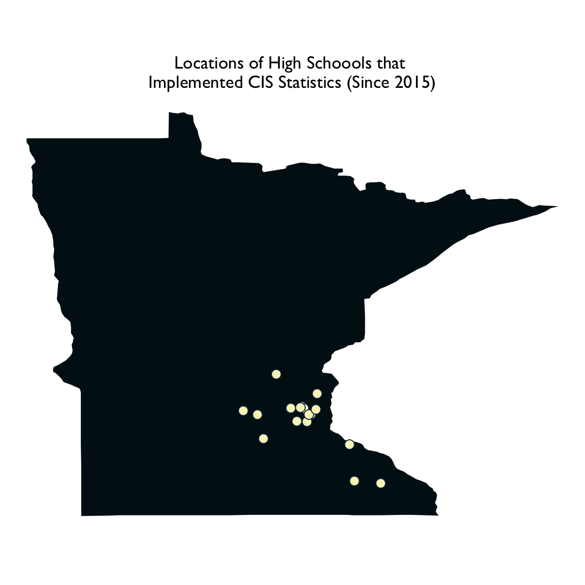

./assets/body-header.qmd
College in the Schools is a concurrent enrollment program in which existing University of Minnesota courses are taught in high schools by high school teachers. All schools wishing to offer a CIS course go through an application process, including an interview and approval by the post-secondary academic department sponsoring the course of any high school teachers who will be teaching the course.
Since CIS is a concurrent enrollment program, students are enrolled simultaneously in the University of Minnesota course (EPsy 3264: Basic and Applied Statistics) and a course at their high school. (As such, they receive two separate grades.) This setup allows for variation between the university and high school schedules. It also allows high schools to cover additional material or devote additional time to topics as needed (e.g., to accommodate requirements of state testing).
CIS Statistics
We implemented the CIS statistics course in the 2015–2016 academic year. Since that time, we have had 17 high schools teach a CIS statistics course. The map below shows these schools.
Curriculum, Pedagogy, and Assessment
To meet the University of Minnesota requirements, the high school students experience the same curriculum and assessments that is used at the university. (They are also graded using the same standards as students at the university.) The course uses the CATALST curriculum which immerses students in the nuts-and-bolts of statistical inference from the first day of the course via a focus on modeling and simulation. One of the primary goals of the CATALST curriculum is the promotion of statistical thinking. This is achieved by emphasizing the “core logic of statistical inference” throughout the curriculum, rather than procedural knowledge.
The underlying philosophy of CATALST is that students are primarily responsible for their own learning. Students meet that responsibility by reading the materials, completing the homework, and carrying out any other preparation prior to each class period.
This is also true in the classroom, where students work with 2–3 other students through a series of structured activities and discussions. This group-work is where a majority of the student learning takes place. In the classroom, the role of the instructor is more “guide-on-the-side”: leading larger classroom discussions, posing questions, and helping students draw connections and make sense of the material.
Students use the TinkerPlots™ software during class and as a part of their at-home preparation and homework. TinkerPlots™ employs allows students to create models and simulate date using an interactive set of tools. The visual display of the simulation process helps students gain a deeper conceptual understanding of the underlying data generation process used in statistical inference.
Because of the emphasis on cooperative group learning in the course, students are evaluated using both group and individual assessments. Individual-level assessments offer students an opportunity to show they have learned the material, while group assessments push students’ understanding of the course material through questions that extend the content in ways they may not have previously encountered (while at the same time offering these extensions via the relative safety of the group).
Professional Development
High school teachers who are accepted to teach the CIS course engage in ongoing professional development (PD). Each year they are required to complete 30 hours of PD: a 3-day workshop each summer and and a 1-day workshop in both the fall and spring semester.
In addition to the PD, CIS teachers are also observed by University of Minnesota faculty. These observations occur at least once during the initial year that a school adopts a CIS course and at least once every three years thereafter.
Resources
More information about the CIS statistics course and the CATALST curriculum can be found in the following resources:
- Garfield, J., delMas, R., & Zieffler, A. (2012). Developing statistical modelers and thinkers in an introductory, tertiary-level statistics course. ZDM—The International Journal on Mathematics Education, 44(4), 883–898.
- Zieffler, A., & Huberty, M. (2015). A catalyst for change in the high school math curriculum. CHANCE, 28(3), 44–49. doi: 10.1080/09332480.2015.1099365